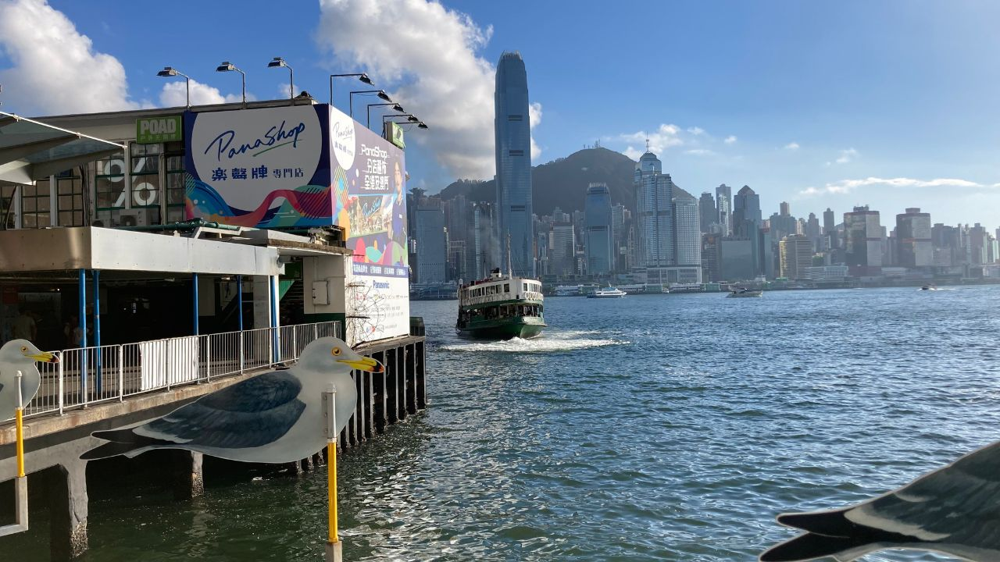

홍콩 · 구룡반도
네온사인과 영화의 거리, 침사추이
홍콩 구룡반도 남단에 위치한 침사추이는 빅토리아 항구의 야경과 빽빽한 네온사인으로 유명한 지역입니다. 왕가위 감독의 명작들이 이곳의 골목과 건물을 무대로 촬영되어, 영화 팬들에게는 성지 같은 곳입니다.
좁은 골목, 오래된 건물, 분주한 거리의 정서가 영화 속 장면 그대로 남아 있어 도시 감성 여행지로 사랑받습니다.
이 지역에서 촬영된 영화
중경삼림 (1994)
왕가위 감독의 대표작. 침사추이의 청킹맨션(중경대하)이 영화 제목의 유래이자 주요 무대입니다. 좁은 복도와 환전소, 패스트푸드점이 영화 속 그대로 남아 있습니다.
화양연화 (2000)
1960년대 홍콩의 정서를 담은 작품. 침사추이 일대의 좁은 골목과 계단이 두 주인공의 엇갈린 감정을 그리는 배경으로 등장합니다.
근처 명소
빅토리아 항구 / 심포니 오브 라이츠
매일 밤 8시 홍콩섬 스카이라인을 수놓는 빛과 음악의 쇼. 침사추이 해변 산책로가 명당입니다.
청킹맨션 (중경대하)
중경삼림의 그 건물. 다양한 국적의 상점과 환전소가 모인 복합 건물로, 영화 팬의 필수 코스.
스타의 거리 (Avenue of Stars)
홍콩 영화인을 기념하는 해변 산책로. 빅토리아 항구 전망과 함께 영화 도시 홍콩을 느낄 수 있습니다.
주변 맛집
딤섬
딤딤섬 (Dim Dim Sum)
합리적인 가격의 인기 딤섬집. 새우 하가우와 커스터드 번이 대표 메뉴.
차찬텡
오스트레일리아 데어리 컴퍼니
홍콩식 스크램블 에그와 밀크티로 유명한 현지인 단골 식당.
디저트
허유산 (許留山)
망고 디저트로 유명한 홍콩 대표 디저트 체인. 더운 날 필수 코스.